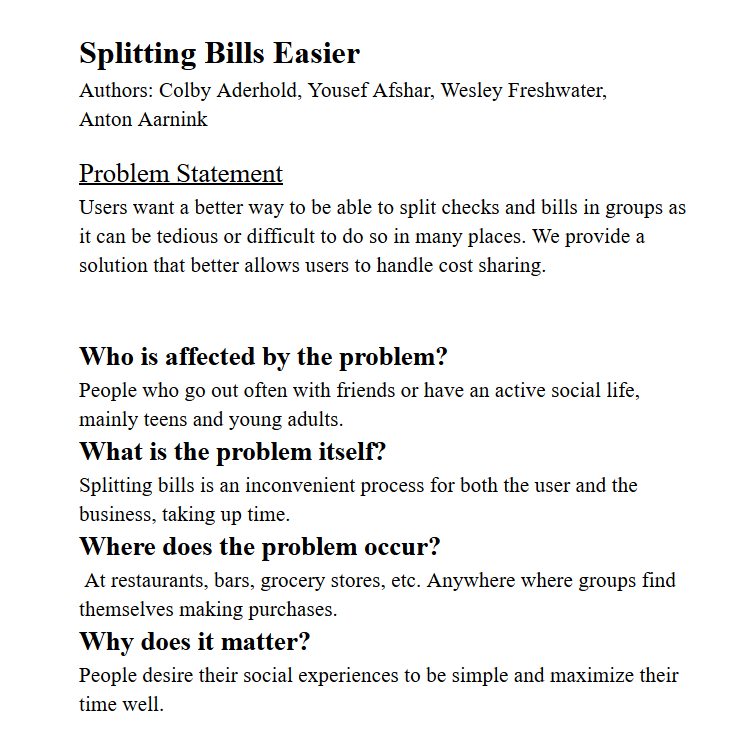
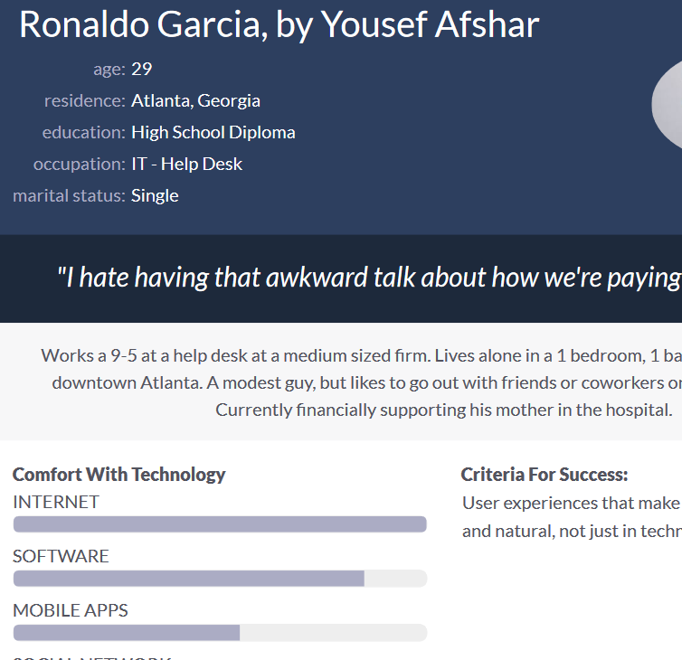
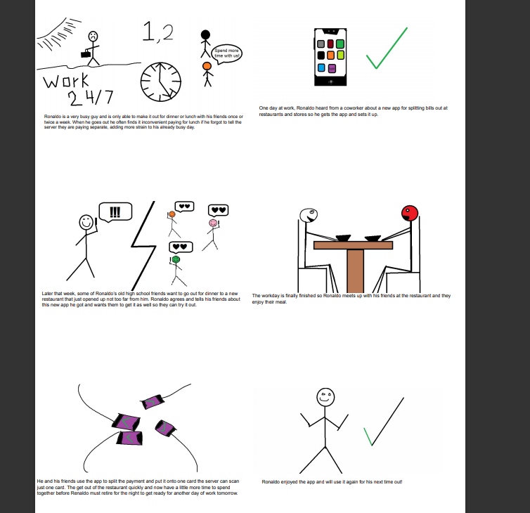
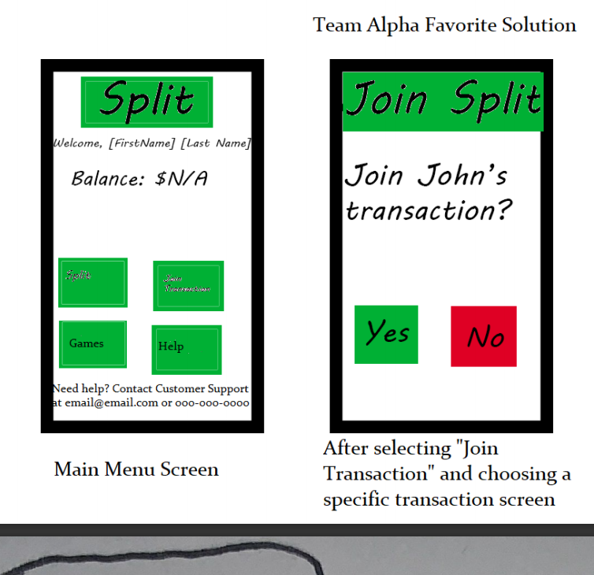
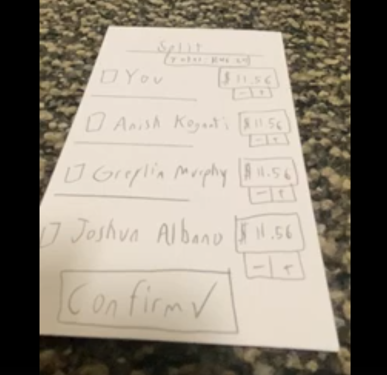
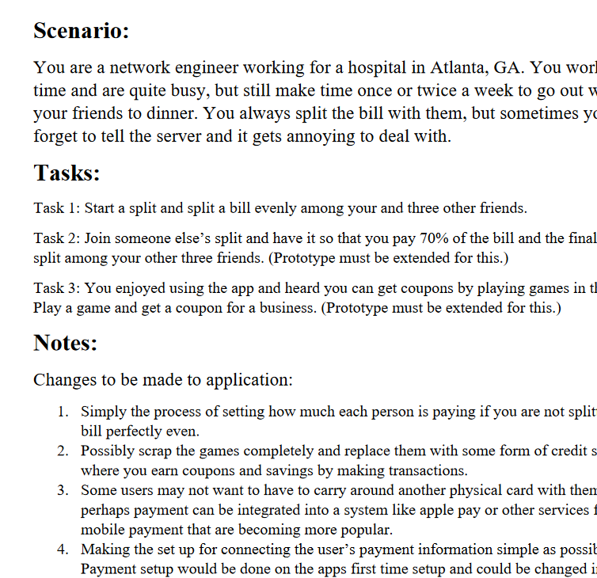
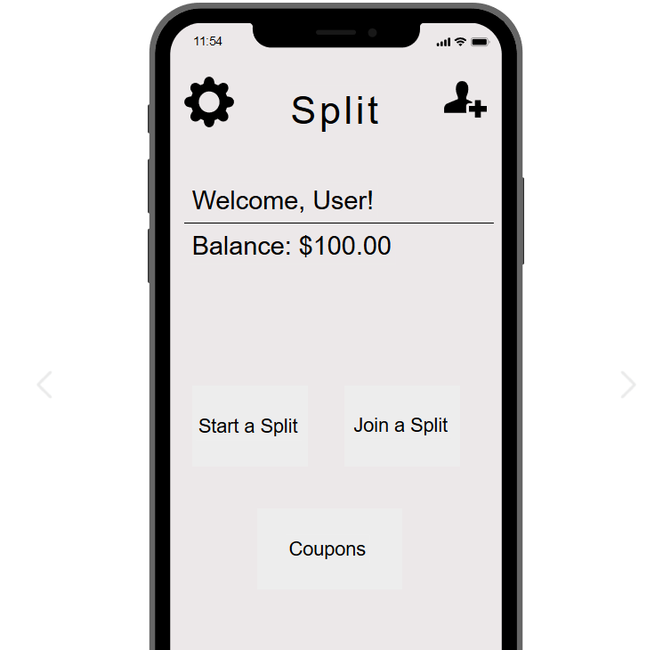
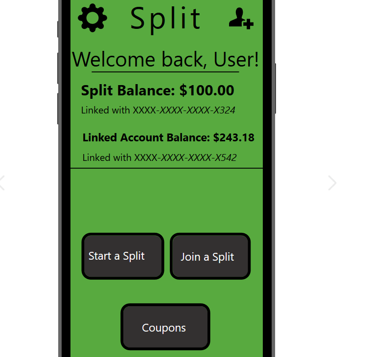
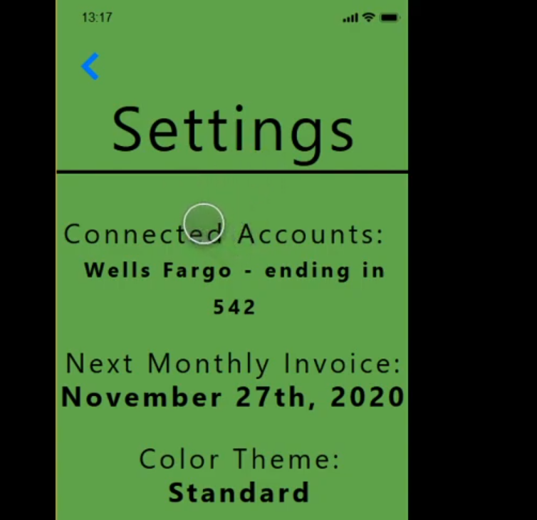

Problem Statement: Splitting Bills
Users want a better way to be able to split checks and bills in groups as it can be tedious or difficult to do so in many places. We provide a solution that better allows users to handle cost sharing.
Affinity Diagram: Splitting Bills

Our group brainstormed together to look at various elements of our bill splitting application ranging from how the target audience can be targeted to solutions of how the payment system is done.
Personas: 4 Personas for Splitting Bills
Each member of our group worked on a different persona for varying users of our bill splitting application.
Storyboard: Ronaldo Garcia
A short comic made with my persona Ronaldo Garcia about him and his usage of the app.
Sketches: Split App
Several sketches of possible solutions for the bill splitting app.
Paper Prototype: Split App
A paper prototype of our Split app demonstrating the primary function of the app.
Usability Testing: Split App
A basic scenario and task for test users to complete in order to test the effectiveness of the application.
Lo-Fi Prototype: Split App
A lo-fi prototype of the split app that is capable of basic functionality.
Hi-Fi Prototype: Split App
A hi-fi prototype of the split app that is capable of slightly more functionality than the lo-fi version and is far more polished visually.
Final Presentation: Split App
A video presentation of our hi-fi prototype of the split app that demonstrates the functionality app and walks throughg it's functions.